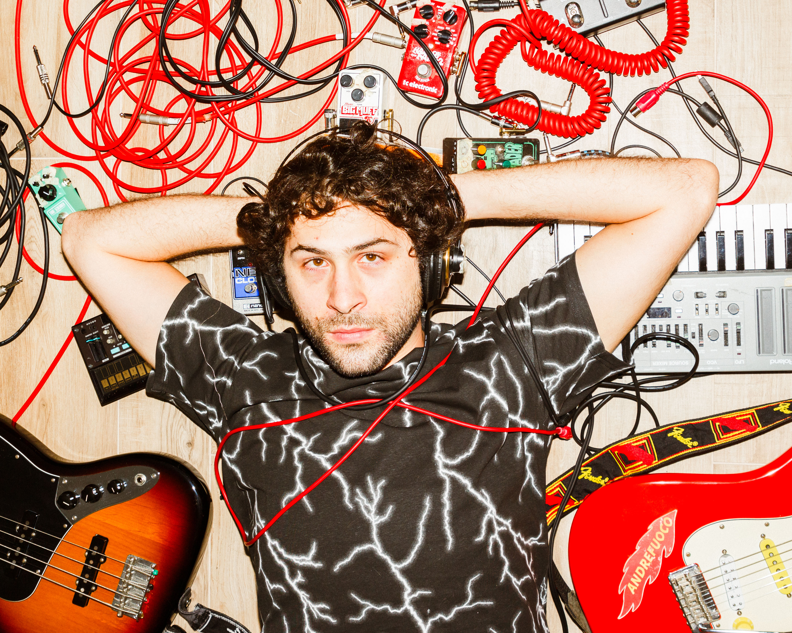

Bio
Chi è Andrefuoco
«Puoi chiamarla Utopia
Ma è solo Fantascienza»
Andrea Capirchio, in arte ANDREFUOCO, è un cantautore-smanettone classe 1992, nato e cresciuto a Firenze. Un connubio che gli permette di rintracciare la poesia nella scienza e l'umanità nella tecnologia.
Sin dall'adolescenza porta avanti parallelamente lo studio della chitarra e dei computer, per anni considerandoli compartimenti stagni del suo percorso. Dopo la laurea in Ingegneria Informatica, riscopre il cantautorato e in particolare la sua sottocorrente indie, mentre band e artisti come i Cani, Baustelle, Brunori SAS e Twenty One Pilots lo ispirano nella scrittura delle sue prime canzoni in italiano.
Nello scrivere, attinge dal suo bagaglio tecnico, e inserisce con disinvoltura concetti derivati dalla letteratura scientifica mediante l'espediente dell'ironia e della nerdcultura, attuando così la sua divulgazione subliminale.
La sua prima incarnazione musicale è la band Elettrogruppogeno, con la quale pubblica un disco per Maninalto! Records, anticipato dal singolo La Mia Ragazza è Una Nerd, per il quale sviluppa un videogioco basato sulla canzone stessa. Calca diversi palchi fiorentini quali Jazz Club, La Limonaia, Ultravox e si esibisce in apertura dei concerti di vari artisti noti, tra i quali Meganoidi, Finaz e Cecco e Cipo. Vince due premi della critica all'Ivisionatici Music Festival 2022 e arriva a suonare sul palco del The Cage di Livorno.
Conclusa l'esperienza della band, decide di intraprendere la strada del cantautorato-rock col nome di ANDREFUOCO, nickname scelto anni or sono per incutere timore agli avversari della PlayStation 3, e oggi riappropriato come identità artistica: sia per l'appartenenza al mondo nerd, sia per l'anima ironica del progetto, ma anche per il richiamo all'atto di bruciare le certezze sulle quali si basa la società di oggi.
La sua penna mette infatti in discussione il rapporto dell'uomo con la tecnologia, le criticità della società neoliberista e i modi in cui queste si rivelano nella nostra vita quotidiana. Un'attenzione particolare è dedicata al modo in cui viviamo l'amore e le relazioni, ma l'argomento è trattato applicando il processo logico-razionale al caos emotivo che le caratterizza, realizzando quindi un continuo scambio tra emisfero destro e sinistro del cervello.
Nel suo progetto utilizza il linguaggio della canzone italiana come un laboratorio di ricerca, unendo i due mondi dell'arte e della scienza, apparentemente inconciliabili, in ritornelli dall'altissimo coefficiente nerd.
Collabora al suo primo EP FANTASCIENZA con Marco Carnesecchi (autore/chitarrista per Anna Oxa, produttore di Cassandra, Zebra TSO), col quale produce 5 brani. Il primo singolo estratto dall'EP è il brano MARZIANI SIAMO NOI, mentre le prossime uscite, previste per giugno e luglio 2026, saranno i singoli PLANCTON e NON MI LAVO MAI, che vantano le collaborazioni di Oratio e de Le Canzoni Giuste e ne anticipano l'uscita.
Viene selezionato da Rockit come uno dei 32 progetti più interessanti dell'underground italiano per King of Provincia 2026.
Ascolta
Musica
Le ultime uscite, aggiornate automaticamente da Spotify.
Guarda
Video
Scatti